|
xtd - Reference Guide
0.2.0
|
Menus and tool bars appearances
Contains menus and tool bars appearances.
- Context menu appearance
xtd::forms::context_menu Windows macOS Gnome Light 
 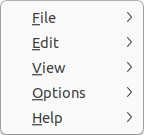
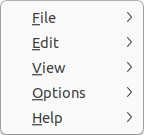Dark 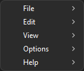 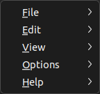
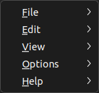
- Main menu appearance
xtd::forms::main_menu Windows macOS Gnome Light 


Dark 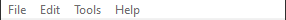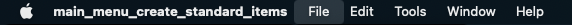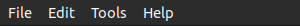
- Status bar appearance
xtd::forms::status_bar Windows macOS Gnome Light Dark 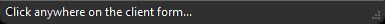 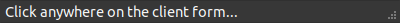
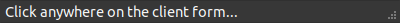
- Tool bar appearance
xtd::forms::tool_bar Windows macOS Gnome Light 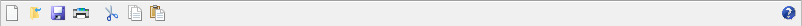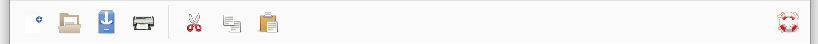Dark 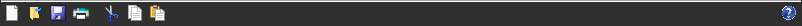
Generated on Thu Feb 9 2023 20:39:32 for xtd - Reference Guide by Gammasoft. All rights reserved.